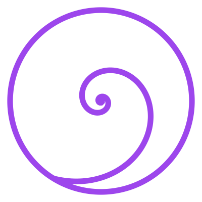

The Channels
Every grammar in this commons — the decks, the sources, the courses, the spreads — as a channel. Read any of them here, or open the living channel on recursive.eco, where you can fork, edit, and cast.

Open this channel in recursive.eco ↗Loading the library…